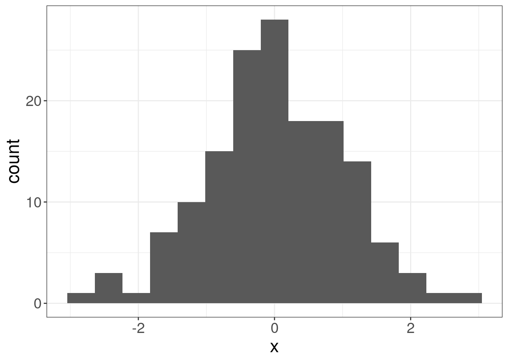

6 Vowel formants’ normalization
This section is based on (Adank 2003).
There are three possible sources of variation in vowel formants measurements (Ladefoged and Broadbent 1957; Pols, Tromp, and Plomp 1973: 1095; Adank 2003):
- acoustic variation;
- speaker variation;
- sociolinguistic;
- anatomical/physiological variation;
- and measurement error (“residual variance” in (Pols, Tromp, and Plomp 1973)).
There are a lot of researchers aimed to reduce speaker-related variation using acoustic vowel normalization (e. g. (Gerstman 1968; Lobanov 1971; Syrdal and Gopal 1986)). However there are some researches that afraid that normalization procedures can reduce interesting for the linguistics information like sociolinguistic/dialectal signal in data (Hindle 1978; Disner 1980; Thomas 2002, 174–75).
Human listeners deal seemingly effortlessly with all three possible sources of variation, but the dataset from (Peterson and Barney 1952) shows extrordinary variation:

6.1 Acoustic vowel normalization procedures
There are several classes of vowel normalization procedures:
- formant-based procedures (Gerstman 1968; Lobanov 1971; Fant 1975; Syrdal and Gopal 1986; Miller 1989);
- whole-spectrum procedures (Klein, Plomp, and Pols 1970; Pols, Tromp, and Plomp 1973; Bladon and Lindblom 1981; Bladon 1982; Klatt 1982);
- Neural networks (D. J. M. Weenink 1993; D. Weenink 1997).
Formant-based procedures are the most compact (just 2- or 3-dimensional represetations) and comparable crosslinguisticaly.
In (Adank 2003) author compared 11 methods of vowel normalization:
| abb | method | |
|---|---|---|
| 1 | HZ | the baseline condition, formants in Hz |
| 2 | LOG | a log-transformation of the frequency scale |
| 3 | BARK | a bark-transformation of the frequency scale |
| 4 | MEL | a mel-transformation of the frequency scale |
| 5 | ERB | an ERB-transformation of the frequency scale |
| 6 | GERSTMAN | Gerstman’s (1968) range normalization |
| 7 | LOBANOV | Lobanov’s (1971) z-score transformation |
| 8 | NORDSTRÖM & LINDBLOM | Nordström & Lindblom’s (1975) vocal-tract scaling |
| 9 | CLIH i4 | Nearey’s (1978) individual log-mean procedure |
| 10 | CLIH s4 | Nearey’s (1978) shared log-mean procedure |
| 11 | SYRDAL & GOPAL | Syrdal & Gopal’s (1986) bark-distance model |
| 12 | MILLER | Miller’s (1989) formant-ratio model |
6.2 (Lobanov 1971) z-score transformation
The idea behind the Lobanov’s method is simple z-normalization. Imagine some random distribution:
If we apply the folowing normalization, the distribution form will be the same, however the scale will be unified with mean = 0 and standard deviation = 1:
\[x_{normalized} = \frac{x-\mu}{\sigma}\]


You can find implementation of other methods in R package vowels.
Try to normalize and visualize data from the dataset Hillenbrand et al. (1995), stored in h95 variable in the package phonTools.